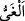

edenden hangisine uyacakları konusunda tereddütte olan ileri gelen adamlarının
durumudur.
Onlar, Fir’avn’a hemen uymuşlardır. Bu tâbi oluşları sanki Mûsâ (a.s.)’ın gönderilip
tebliğe başlamasından sonra değil de hemen aynı anda meydana gelmiş gibidir.
“Oysa Fir’avn’un emri doğru değildi.”
Kâşifî der ki: “Fir’avn’un işi, doğru yolda değildi.” Başkaları ise “__WORD__ azgınlık” lâfzı,
her tür kötü işte, öfkeye sebep olan her şeyde kullanıldığı gibi “__WORD__” kelimesi de
övülen ve rızâ gösterilen her şey için kullanılır.” der. Buna göre âyetteki “raşîd”
kelimesi, doğruyu gösteren “mürşid” mânâsınadır. Buna göre mânâ şöyledir: Fir’avn’un
emri hiçbir hayrı gösterici değildi. O sırf azgınlık ve apaçık bir sapıklıktı. Akıllı
insanlar ise kendilerini saptırıp azdıranlara değil, doğru yolu gösterip ona iletenlere
tâbi olurlar. Bu ifâde ile Fir’avn’a uyanların câhil oldukları ortaya konulmaktadır.
98. O, kıyamet günü kavminin önüne düşecek ve onları ateşe götürecektir.
Varacakları yer ne kötü yerdir!
“O, kıyamet günü kavminin” hem ileri gelenlerinin hem de ötekilerin “önüne
düşecek” yani âhiret gününde ateşe, kendisi önde kavmi arkasında olduğu halde
gidecektir. Aynen dünyada kendilerini dalâlete sürüklerken ona uydukları gibi “onları
ateşe götürecektir.” yani ateşe getirecek ve oraya sokacaktır.
Âyette mâzî (geçmiş zaman) sıygasının kullanılması, bu hâdisenin muhakkak vukû
bulacağını göstermek içindir. Çünkü mâzînin, geçmiş bir şeyin varlığı kesindir.
Bilesin ki “__WORD__”, suya gelmek demektir. “__WORD__” ise başkasını suya götürmek
demektir. “__WORD__” ise sudur. Böylece Fir’avn sürüyü suya götüren çobana, tâbileri
sürüye, ateş de bunların geldiği suya benzetilmiş oluyor. Sonra da şöyle buyruluyor:
“Varacakları yer ne kötü yerdir!” Varacakları yer olarak ateş ne kötüdür! Çünkü suya
susuzluğu gidermek ve ciğerleri serinletmek için gidilir, ateş ise bunun tam aksinedir.
99. Onlar burada da, kıyamet gününde de lânete uğratıldılar. (Onlara) verilen bu
armağan ne kötü armağandır!
“Onlar” yani Fir’avn’un emrine uyan ileri gelenler “burada da, kıyamet gününde
de” büyük bir “lânete uğratıldılar.” Çünkü dünyada kendilerinden sonra gelen
ümmetler onları lânetlemektedir. Kıyâmet gününde ise bütün mahşer halkı onları